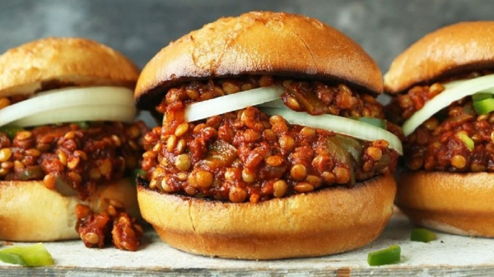

- Serves: 4 people
- Prep Time: 30 min
- Cooking: 2 hours
- Calories: 332 cal
This is a very basic and yummy sandwich. It’s easy, delicious and inexpensive to make. While there are hundreds of variations of this traditional recipe, it’s hard to improve on this version’s savory and comforting goodness.
Ingredients
Directions
- In a skillet, heat oil over medium heat until hot, but not smoking. Pat the meat dry with paper towels and brown in batches, transferring the meat with a slotted spoon to a bowl as they are done.
- In the fat remaining in the pot, cook the onions until softened, about 5 minutes.
- Return meat to the pot with any juices in the bowl and add the tomatoes with juice, chiles, beer, beef broth, oregano, cumin, and Worcestershire sauce. Season with salt and pepper to taste.
- Bring to a boil and reduce heat. Simmer, partially covered, for 2 1/2 hours or until meat is tender.